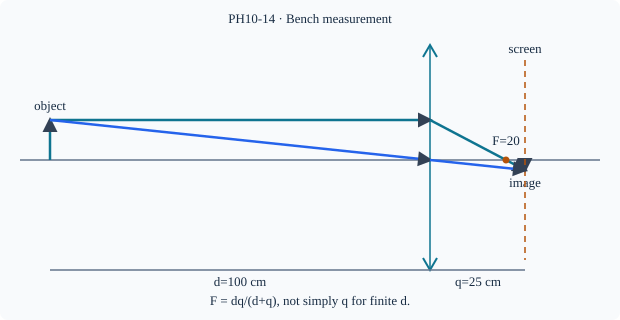

Prerequisite bridge
PH10-07
Before starting, identify the reference frame, directed rays, units and applicable geometric assumptions. Unbound prerequisites remain provisional.
Connected textbook foundation (preserved from PR #5)
16. Measurements, interpretation and uncertainty
A distant-object lens experiment approximates parallel incoming rays. Moving a screen to focus on a remote object gives an approximate focal-length measurement. The object is not literally at infinity, the lens is not perfectly thin, and screen placement has finite precision. Recording an uncertainty and a method is more informative than writing three decimal places.
In a displacement experiment, students need to measure D, x_1, x_2 and d=|x_2-x_1| consistently. They should inspect whether two distinct sharp positions are actually resolved, whether the lens was centered, and whether the experiment is within the thin-lens regime.
Build and check the model
For a thin converging lens, a distant object's sharp screen distance approximates F. For finite distance d>F, q=Fd/(d−F)>F, so using q as F gives an overestimate. A more controlled bench method measures both d and q from the lens principal plane/optical centre approximation, then F=dq/(d+q). Repeating with different conjugates and estimating uncertainty checks consistency. Keep sources low-power and safe; never use direct solar focusing as a routine activity.
Worked anchor
d=100 cm,q=25 cm gives F=20 cm. If the screen is read 1 cm too far, F_est=100×26/126≈20.63 cm. A second conjugate d=60,q=30 also gives F=20.
Condition and limiting check
A diverging lens cannot form a real screen image of a real object by itself; measuring its focal length needs an additional method.
Misconception repair
A sharp image distance is a conjugate distance, not necessarily the focal length.
Reasoning diagram

Self-check before transfer
Object at d=45 cm gives sharp image q=90 cm. Find F.
Check the reasoning
F=45×90/135=30 cm.
Source and figure status
Curriculum pointer CBSE10; candidate scope only. Preserved chapter manuscript. Original subtopic-specific figure attached. Scientific figure and teaching-sufficiency reviews remain HOLD.